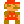

<!DOCTYPE html>
<html lang="ja">
<!--
    参考サイト：https://kita-note.com/leaflet-tutorial-10
-->

<head>
    <title>Leaflet入門10 地図にボタンを追加</title>
    <meta charset="utf-8">
    <meta name="viewport" content="width=device-width, initial-scale=1.0">
    <!-- leaflet -->
    <link rel="stylesheet" href="https://unpkg.com/leaflet@1.3.1/dist/leaflet.css" integrity="sha512-Rksm5RenBEKSKFjgI3a41vrjkw4EVPlJ3+OiI65vTjIdo9brlAacEuKOiQ5OFh7cOI1bkDwLqdLw3Zg0cRJAAQ==" crossorigin="">
    <script src="https://unpkg.com/leaflet@1.3.1/dist/leaflet.js" integrity="sha512-/Nsx9X4HebavoBvEBuyp3I7od5tA0UzAxs+j83KgC8PU0kgB4XiK4Lfe4y4cgBtaRJQEIFCW+oC506aPT2L1zw==" crossorigin=""></script>

    <!-- ボタン表示アイコンとして FontAwesome 使用(https://fontawesome.com/) -->
    <link rel="stylesheet" href="https://use.fontawesome.com/releases/v5.0.13/css/all.css" integrity="sha384-DNOHZ68U8hZfKXOrtjWvjxusGo9WQnrNx2sqG0tfsghAvtVlRW3tvkXWZh58N9jp" crossorigin="anonymous">

    <!-- L.easyButton -->
    <!--
        GitHub
        https://github.com/CliffCloud/Leaflet.EasyButton
    -->
    <link rel='stylesheet' href='lib/Leaflet.EasyButton/src/easy-button.css' />
    <script src='lib/Leaflet.EasyButton/src/easy-button.js'></script>

    <style type="text/css">
        #mapid {
            height: 400px;
            width: 600px
        }
    </style>
</head>

<body>
    <div id="mapid"></div>

    <script>
        var map = L.map('mapid').setView([35.7102, 139.8132], 15);

        L.tileLayer('http://{s}.tile.osm.org/{z}/{x}/{y}.png', {
            maxZoom: 18,
            attribution: 'Map data &copy; <a href="http://openstreetmap.org">OpenStreetMap</a> contributors, '
        }).addTo(map);

        // popup メッセージの定義
        var popup = L.popup().setContent('ポップアップメッセージ');
        // ボタンの追加・アクションの定義
        // ボタンに表示するアイコン(Font Awesome の fas fa-comment-alt)指定
        L.easyButton('fas fa-comment-alt', function(btn, easyMap) {
            // ボタン押下時イベント
            // 今回の例では地図の真ん中に popup メッセージを表示する。
            popup.setLatLng(easyMap.getCenter()).openOn(easyMap);
        }).addTo(map);

        // 3-1.座標切替 ボタンを押下すると地図に表示する座標切替
        L.easyButton('fas fa-plane', function(btn, easyMap) {
            var hanedaAirport = [35.5494, 139.7798]; // ボタンクリックでの移動先の緯度経度を指定(羽田空港)
            easyMap.setView(hanedaAirport);
        }).addTo(map)

        // 3-2.1つのボタンに複数のアクション定義
        L.easyButton({
            states: [{
                stateName: 'zoom-to-haneda',    // 状態のIDのようなもの
                icon: 'fas fa-plane',           // 使用するアイコン
                title: '羽田空港',               // マウスオーバー時にツールチップに表示される名前
                onClick: function(btn, map) {
                    map.setView([35.5494, 139.7798], 15);
                    btn.state('zoom-to-current-location'); // ボタンクリック後の状態を指定
                }
            }, {
                stateName: 'zoom-to-current-location',
                icon: 'fas fa-map-marker-alt',
                title: '現在地',
                onClick: function(btn, map) {
                    map.setView([35.7102, 139.8132], 15);
                    btn.state('zoom-to-haneda');
                }
            }]
        }).addTo(map);
        
        // 3-3.画像ファイルをボタンのアイコンに
        
        // 押下時表示メッセージ
        var popup_altor = L.popup().setContent('マリオ');
        L.easyButton('', function(btn, easyMap) {
            popup_altor.setLatLng(easyMap.getCenter()).openOn(easyMap);
        }).addTo(map);

        
    </script>
</body>

</html>